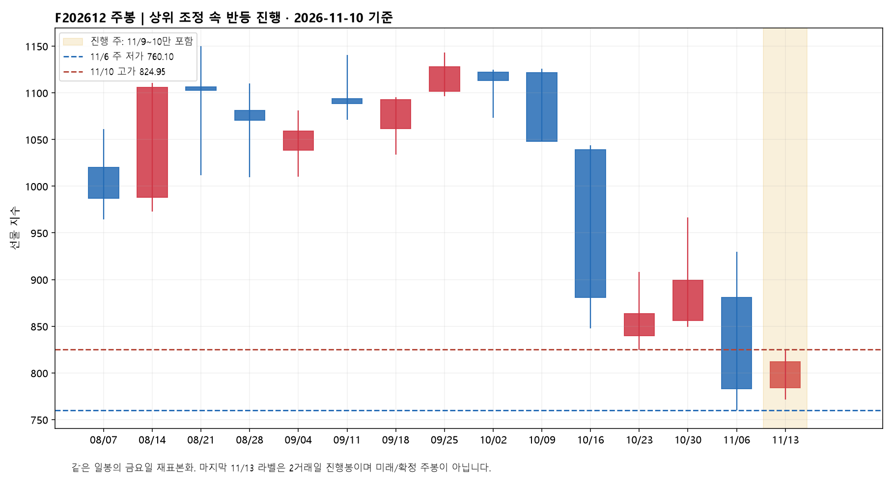
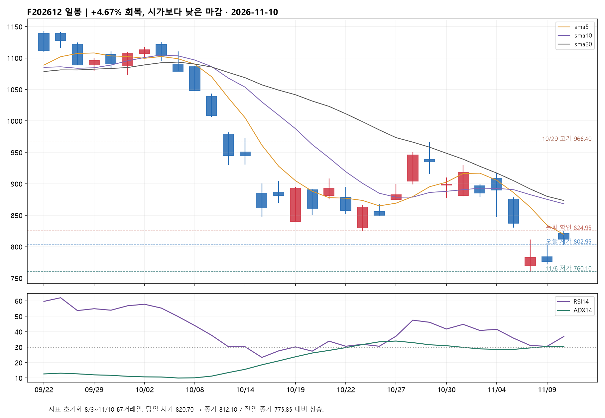
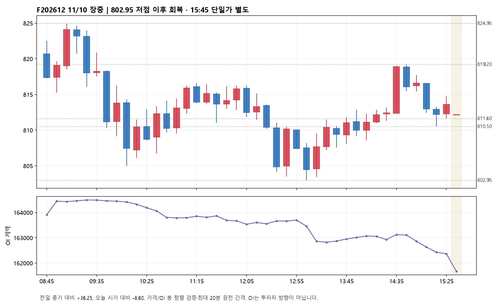
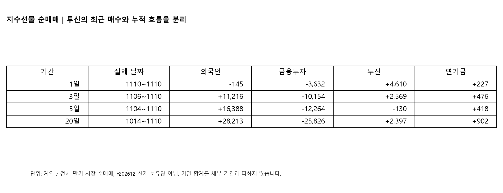
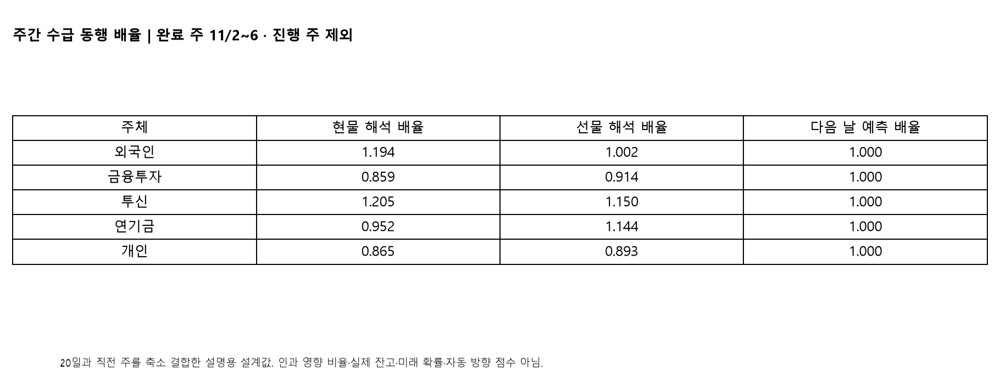
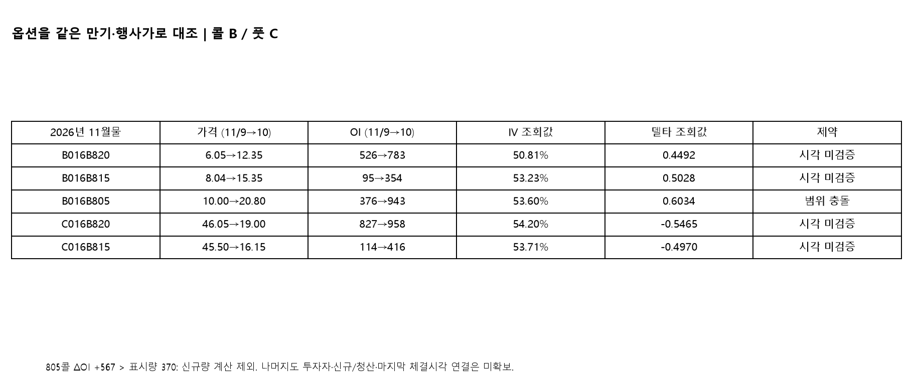

F202612 / A016C000 · 정규장 812.10 · 이후 야간 미반영
단기 회복 우세로 상향 / 주봉 하락구조 속 일봉 반등. 투신 현선물 매수·외국인 현물 전환은 개선, 장중 시가 하회·OI 감소는 확산 제약. 유지 810.50~811.60, 핵심 802.95 / 회복 819.05~820.70 / 전환 확인 824.95.
전일의 단기 하방 우세 판단은 오늘 +4.67% 상승과 803.35·811.30 회복을 설명하지 못했습니다. 이를 유지하지 않고 단기 회복 우세로 상향합니다. 선호 시나리오는 11/6 저점 760.10→11/9 저점 771.55→오늘 802.95의 높아진 저점과 824.95의 높아진 고점을 바탕으로 한 반등 연장입니다. 다만 상위 10/29 고점 966.40 이후 조정 안의 A 또는 1파 후보로, 하위 5파 확인이 없어 차수는 미확정입니다. 이미 실패한 824.65 출발 상승 가설을 되살린 것이 아닙니다. 810.50~811.60을 완료 10분봉으로 지키고 재지지하면 819.05~820.70, 다음은 824.65~824.95입니다. 824.95 위 일봉 종가와 다음 세션 재지지가 나오면 830.60→837.25 회복을 점검합니다. 반대 시나리오는 큰 하락 중 반등이 819.20~824.95에서 소진되는 경우입니다. 802.95를 실제 저가로 깨면 오늘 저점완성 가설은 철회하며, 완료 10분봉 이탈 후 되돌림이 막히면 794.20과 전일 종가 775.85의 갭 축소 위험을 봅니다. 771.55와 760.10은 각각 전일·직전 주 저점이고, 760.10 침범은 그 저점에서 시작한 바닥 형성 가설의 무효화입니다. 가격 확인 전 상승·하락을 확정하거나 자동 주문하지 않습니다.
오늘 선물 매수를 주도한 주체는 투신입니다. 외국인 −145·금융투자 −3,632·개인 −610계약에 맞서 투신 +4,610·연기금 +227계약이 순매수했습니다. 기관계 +816은 세부 주체를 포함한 합계이므로 중복 가산하지 않습니다. 투신은 전일 +1,599에서 매수가 늘고 금융투자 매도는 전일 −5,520에서 줄었습니다. 외국인 선물은 전일 +4,190에서 소폭 매도로 돌아섰지만, 현물은 전일 매도에서 오늘 매수로 전환했고 투신도 현물 매수입니다. 따라서 전일보다 현물 쪽 매수 합의가 넓어졌습니다. 다만 현물 개인 매도를 외국인·기관·기타 주체가 받아낸 시장 전체 순매매 대응이지, 동일 계좌의 상대방을 확인한 것은 아닙니다. 외국인 선물 최근 3일 +11,216·5일 +16,388·20일 +28,213계약입니다. 투신은 3일 +2,569지만 5일 −130으로, 이틀 매수가 이전 매도를 거의 되돌린 단계입니다. 선물 가격은 3일 −25.15·5일 −73.05·20일 −132.70포인트여서 누적 외국인 매수 자체를 가격 상승 증거로 삼지는 않습니다.
외국인 현물 LS 원자료는 당일 +4,161, 3일 −27,993, 5일 −86,261, 20일 −161,249로 당일 개선과 누적 매도가 충돌합니다. 현물 세부 조회는 외국인 +4,165·투신 +3,285·금융투자 +864·연기금 −1,101입니다. 두 조회의 소액 차이는 보존했고 원화 환산 단위 독립 확인 전이라 억원으로 단정하지 않습니다. 외국인 주식선물은 −23,632계약(3일 +81,545·5일 +28,164)으로 현물과 다릅니다. 금융투자도 현물 매수와 지수선물·주식선물 매도가 엇갈려 헤지·차익 조합이 반대 설명입니다. 현물 프로그램 LS 차익 −85,706·비차익 +605,955·합계 +520,249 원자료값은 비차익 순매수 우세를 보입니다. 단위 환산·개별 주체 귀속은 미확인입니다. 선물 812.10과 KOSPI200 814.31의 시장 베이시스는 −2.21, LS 이론 베이시스 +1.79(이론가 816.10)입니다. 각 시장 종가 시각이 달라 동시각 저평가나 무위험 차익으로 해석하지 않습니다.
정규장 시가 820.70은 전일 775.85보다 +44.85였고 종가는 812.10으로 시가 대비 −8.60(−1.05%)입니다. 09:05봉 고가 824.95 뒤 13:05봉 저가 802.95까지 눌렸고 오후 14:45봉 고가 819.20을 거쳐 마감했습니다. 08:45→12:05 봉 종가는 817.35→812.45(−4.90), OI는 163,909→163,533(−376)입니다. 12:05→15:25는 812.45→813.60(+1.15), OI −1,171로 오후 반등은 순포지션 감소와 동행했습니다. 다만 14:25→14:35는 812.40→818.90(+6.50)와 OI +192로 짧은 참여 확대 반등도 있었습니다. 이를 무시해 전부 청산성 반등으로 묶지 않습니다. 15:25→15:45는 가격 −1.50·OI −689입니다. 15:45는 종가 단일가이며 일반 10분봉과 분리합니다. LS 마감 CVD −2,399도 장중 매도 체결 우세를 보조하지만, 경로 63공백·미분류량 4,939가 있어 완전 체결경로나 투자자 방향으로 읽지 않습니다.
12월물 OI는 161,673계약으로 동일 재조회 시계열의 전일 163,220 대비 −1,547입니다. 오늘 키움과 LS가 일치합니다. 전일 저장 OI 164,528은 오늘 재조회 163,220과 1,308 차이가 있어 원본을 보존했습니다. 기존 브리지의 −2,855는 이전 저장값을 뺀 값이므로 이번 해석에서는 사용하지 않습니다. 가격 +36.25와 OI 감소는 포지션 축소를 동반한 반등과 양립하지만, 특정 주체의 숏커버만으로 확정할 수는 없습니다. 3일 OI +3,634·5일 +12,455·20일 +13,343의 누적 증가가 오늘 하루에 모두 해소된 것도 아닙니다. 차기 2027년 3월물은 804.45, 거래량 36, OI 5,659(+7)로 거래가 매우 얇습니다. 최근월물 감소를 차기월물로의 일대일 롤오버로 설명할 근거는 없습니다.
외국인 콜은 +1,190계약이지만 금액은 −9억원, 풋은 +3,111계약이지만 금액은 −42억원입니다. 계약 수만 보고 대규모 강세 콜 매수로 합치면 안 됩니다. 전일 콜 +3,931계약·+344억원과는 강도가 다릅니다. 투신은 선물 +4,610과 콜 −526계약·−11억원으로 조합이 엇갈립니다. 11월물 815콜(B016B815)은 8.04→15.35, OI 95→354(+259), IV 53.23%, 델타 0.5028입니다. 820콜(B016B820)은 6.05→12.35, OI 526→783(+257), IV 50.81%, 델타 0.4492입니다. 동일 계약의 가격 상승과 OI 순증은 상승 노출에 대한 참여 증가의 증거로 반영합니다. 다만 한 계약의 신규 롱과 신규 숏은 짝이며, 전체 투자자 순매매를 이 행사가의 외국인 신규 매수로 연결할 수는 없습니다. 815풋은 45.50→16.15·OI +302, 820풋은 46.05→19.00·OI +131로 반대편 계약도 늘었습니다. 805콜 OI +567은 표시 거래량 370보다 큽니다. 일별 재조회도 같은 값을 반환해 집계 범위·야간 반영·정정 중 원인을 확정하지 못했으므로 신규량 계산에서 제외합니다. 대표 IV는 77.02→67.27로 낮아졌으나 콜 62.53보다 풋 78.26이 높습니다. 이는 대표치 비교이지 고정 델타 스큐가 아닙니다. 선택 옵션의 IV·델타는 공급자 조회값이며 마지막 체결시각·전일 동일계약 IV는 미확인입니다. 12월물·거래량 0 계약과 섞거나 고정 델타 0.5, 딜러 감마로 치환하지 않습니다.
주간 해석 배율은 완료 주 11/2~11/6과 10/12~11/6의 20일을 사용했습니다. 현물 외국인 1.194·투신 1.205·금융투자 0.859, 선물 외국인 1.002·투신 1.150·연기금 1.144·금융투자 0.914입니다. 오늘 투신 현선물 매수와 외국인 현물 전환은 이 기준에서 먼저 볼 개선 신호입니다. 그래도 오늘 시가 대비 가격 하락이라는 충돌은 그대로 남깁니다. 11/9~10 진행 주는 가중치 추정에 넣지 않았고, 배율을 수량에 곱해 시장 방향 점수로 합산하지 않았습니다. 당일 동행과 다음 날 예측은 별개입니다. 10/12~11/10 표본에서 외국인·투신 현물 동반 매수와 당일 상승 후 다음 날 상승은 완료 5건 중 2건, 선물은 3건 중 1건입니다. 오늘 현물 합의 사건은 다음 날 미도래로 대기이며, 소표본·사후 선택·정정자료 때문에 미래 확률로 쓰지 않습니다. 모든 예측 배율은 1.0, 옵션 배율은 미산출입니다.
현재 월물 관찰 구간 9/11~11/10의 LS 단일 원천 39거래일을 달력과 대조했습니다. 외국인 +27,569·기관 −25,458·금융투자 −18,527·투신 −4,147·연기금 +1,195계약입니다. 이것도 전체 만기 시장 순매매이지 12월물 실제 잔고가 아닙니다. 기존 장부는 같은 구간 27일만 있어 그 부분합 외국인 +28,698·기관 −26,366을 완결 누적과 섞지 않습니다. 겹치는 9/21 외국인 4,127/4,251·기관 −3,748/−3,963, 9/23 외국인 62/1,356·기관 −1,209/−1,402는 저장 HTS/현재 LS 차이입니다. HTS는 각각 15:59·15:56 캡처여서 장전 자료로 설명되지 않으며 공급자 정정·범위 차이의 원인은 미확인입니다. 원본과 두 합계를 모두 보존했습니다.

완료 11/6주 O880.80·H930.00·L760.10·C782.95. 진행 주는 771.55 저점 위 812.10으로 반등했습니다.

전일의 단기 하방 우세 판단은 오늘 +4.67% 상승과 803.35·811.30 회복을 설명하지 못했습니다. 이를 유지하지 않고 단기 회복 우세로 상향합니다. 선호 시나리오는 11/6 저점 760.10→11/9 저점 771.55→오늘 802.95의 높아진 저점과 824.95의 높아진 고점을 바탕으로 한 반등 연장입니다. 다만 상위 10/29 고점 966.40 이후 조정 안의 A 또는 1파 후보로, 하위 5파 확인이 없어 차수는 미확정입니다. 이미 실패한 824.65 출발 상승 가설을 되살린 것이 아닙니다. 810.50~811.60을 완료 10분봉으로 지키고 재지지하면 819.05~820.70, 다음은 824.65~824.95입니다. 824.95 위 일봉 종가와 다음 세션 재지지가 나오면 830.60→837.25 회복을 점검합니다. 반대 시나리오는 큰 하락 중 반등이 819.20~824.95에서 소진되는 경우입니다. 802.95를 실제 저가로 깨면 오늘 저점완성 가설은 철회하며, 완료 10분봉 이탈 후 되돌림이 막히면 794.20과 전일 종가 775.85의 갭 축소 위험을 봅니다. 771.55와 760.10은 각각 전일·직전 주 저점이고, 760.10 침범은 그 저점에서 시작한 바닥 형성 가설의 무효화입니다. 가격 확인 전 상승·하락을 확정하거나 자동 주문하지 않습니다.

정규장 시가 820.70은 전일 775.85보다 +44.85였고 종가는 812.10으로 시가 대비 −8.60(−1.05%)입니다. 09:05봉 고가 824.95 뒤 13:05봉 저가 802.95까지 눌렸고 오후 14:45봉 고가 819.20을 거쳐 마감했습니다. 08:45→12:05 봉 종가는 817.35→812.45(−4.90), OI는 163,909→163,533(−376)입니다. 12:05→15:25는 812.45→813.60(+1.15), OI −1,171로 오후 반등은 순포지션 감소와 동행했습니다. 다만 14:25→14:35는 812.40→818.90(+6.50)와 OI +192로 짧은 참여 확대 반등도 있었습니다. 이를 무시해 전부 청산성 반등으로 묶지 않습니다. 15:25→15:45는 가격 −1.50·OI −689입니다. 15:45는 종가 단일가이며 일반 10분봉과 분리합니다. LS 마감 CVD −2,399도 장중 매도 체결 우세를 보조하지만, 경로 63공백·미분류량 4,939가 있어 완전 체결경로나 투자자 방향으로 읽지 않습니다.

오늘 선물 매수를 주도한 주체는 투신입니다. 외국인 −145·금융투자 −3,632·개인 −610계약에 맞서 투신 +4,610·연기금 +227계약이 순매수했습니다. 기관계 +816은 세부 주체를 포함한 합계이므로 중복 가산하지 않습니다. 투신은 전일 +1,599에서 매수가 늘고 금융투자 매도는 전일 −5,520에서 줄었습니다. 외국인 선물은 전일 +4,190에서 소폭 매도로 돌아섰지만, 현물은 전일 매도에서 오늘 매수로 전환했고 투신도 현물 매수입니다. 따라서 전일보다 현물 쪽 매수 합의가 넓어졌습니다. 다만 현물 개인 매도를 외국인·기관·기타 주체가 받아낸 시장 전체 순매매 대응이지, 동일 계좌의 상대방을 확인한 것은 아닙니다. 외국인 선물 최근 3일 +11,216·5일 +16,388·20일 +28,213계약입니다. 투신은 3일 +2,569지만 5일 −130으로, 이틀 매수가 이전 매도를 거의 되돌린 단계입니다. 선물 가격은 3일 −25.15·5일 −73.05·20일 −132.70포인트여서 누적 외국인 매수 자체를 가격 상승 증거로 삼지는 않습니다.

주간 해석 배율은 완료 주 11/2~11/6과 10/12~11/6의 20일을 사용했습니다. 현물 외국인 1.194·투신 1.205·금융투자 0.859, 선물 외국인 1.002·투신 1.150·연기금 1.144·금융투자 0.914입니다. 오늘 투신 현선물 매수와 외국인 현물 전환은 이 기준에서 먼저 볼 개선 신호입니다. 그래도 오늘 시가 대비 가격 하락이라는 충돌은 그대로 남깁니다. 11/9~10 진행 주는 가중치 추정에 넣지 않았고, 배율을 수량에 곱해 시장 방향 점수로 합산하지 않았습니다. 당일 동행과 다음 날 예측은 별개입니다. 10/12~11/10 표본에서 외국인·투신 현물 동반 매수와 당일 상승 후 다음 날 상승은 완료 5건 중 2건, 선물은 3건 중 1건입니다. 오늘 현물 합의 사건은 다음 날 미도래로 대기이며, 소표본·사후 선택·정정자료 때문에 미래 확률로 쓰지 않습니다. 모든 예측 배율은 1.0, 옵션 배율은 미산출입니다.

외국인 콜은 +1,190계약이지만 금액은 −9억원, 풋은 +3,111계약이지만 금액은 −42억원입니다. 계약 수만 보고 대규모 강세 콜 매수로 합치면 안 됩니다. 전일 콜 +3,931계약·+344억원과는 강도가 다릅니다. 투신은 선물 +4,610과 콜 −526계약·−11억원으로 조합이 엇갈립니다. 11월물 815콜(B016B815)은 8.04→15.35, OI 95→354(+259), IV 53.23%, 델타 0.5028입니다. 820콜(B016B820)은 6.05→12.35, OI 526→783(+257), IV 50.81%, 델타 0.4492입니다. 동일 계약의 가격 상승과 OI 순증은 상승 노출에 대한 참여 증가의 증거로 반영합니다. 다만 한 계약의 신규 롱과 신규 숏은 짝이며, 전체 투자자 순매매를 이 행사가의 외국인 신규 매수로 연결할 수는 없습니다. 815풋은 45.50→16.15·OI +302, 820풋은 46.05→19.00·OI +131로 반대편 계약도 늘었습니다. 805콜 OI +567은 표시 거래량 370보다 큽니다. 일별 재조회도 같은 값을 반환해 집계 범위·야간 반영·정정 중 원인을 확정하지 못했으므로 신규량 계산에서 제외합니다. 대표 IV는 77.02→67.27로 낮아졌으나 콜 62.53보다 풋 78.26이 높습니다. 이는 대표치 비교이지 고정 델타 스큐가 아닙니다. 선택 옵션의 IV·델타는 공급자 조회값이며 마지막 체결시각·전일 동일계약 IV는 미확인입니다. 12월물·거래량 0 계약과 섞거나 고정 델타 0.5, 딜러 감마로 치환하지 않습니다.
작성 2026-11-10T17:44:29.262525+09:00 · 조건부 시장 해설이며 주문·비중 지시나 검증된 미래 확률이 아닙니다.